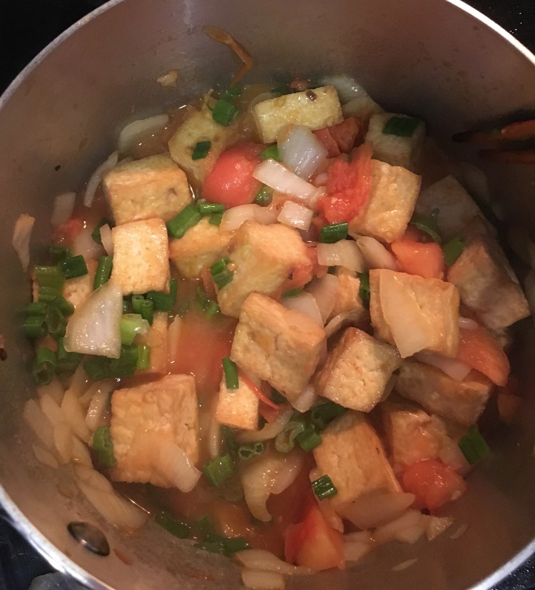

| Other | Meat | Veggie | Fruit |
|---|---|---|---|
| nuoc mam | tofu | garlic | |
| green onions | |||
| onion | |||
| tomato |
| instructions |
|---|
| Fry tofu |
| Saute onions, garlic, and tomato in a pot |
| When tomatoes have softened, add very small bowl of water |
| Add fried tofu |
| Add with nuoc mam and water for flavor |
| Add a starch slurry and simmer for 15 min |
| Add green onions in last few minutes |